What do I think about Community Notes?
2023 Aug 16
See all posts
What do I think about Community Notes?
Special thanks to Dennis Pourteaux and Jay Baxter for feedback
and review.
The last two years of Twitter X have been tumultuous, to say
the least. After the platform was bought
not
bought bought
by Elon Musk for $44 billion last year, Elon enacted sweeping changes to
the company's staffing,
content
moderation and business
model, not to mention changes to the culture on the site that may
well have been a result of Elon's soft power more than any specific
policy decision. But in the middle of these highly contentious actions,
one new feature on Twitter grew rapidly in importance, and seems to be
beloved by people across the political spectrum: Community Notes.

Community Notes is a fact-checking tool that sometimes attaches
context notes, like the one on Elon's tweet above, to tweets as a
fact-checking and anti-misinformation tool. It was originally called
Birdwatch, and was first rolled out as a pilot project in January 2021.
Since then, it has expanded in stages, with the most rapid phase of its
expansion coinciding with Twitter's takeover by Elon last year. Today,
Community Notes appear frequently on tweets that get a very large
audience on Twitter, including those on contentious political topics.
And both in my view, and in the view of many people across the political
spectrum I talk to, the notes, when they appear, are informative and
valuable.
But what interests me most about Community Notes is how, despite not
being a "crypto project", it might be the closest thing to an
instantiation of "crypto values" that we have seen in the mainstream
world. Community Notes are not written or curated by some centrally
selected set of experts; rather, they can be written and voted on by
anyone, and which notes are shown or not shown is decided entirely by an
open source
algorithm. The Twitter site has a detailed
and extensive guide describing how the algorithm works, and you can
download
the data containing which notes and votes have been published, run
the
algorithm locally, and verify that the output matches what is
visible on the Twitter site. It's not perfect, but it's surprisingly
close to satisfying the ideal of credible
neutrality, all while being impressively useful, even under
contentious conditions, at the same time.
Anyone with a Twitter account matching
some criteria (basically: active for 6+ months, no recent rule
violations, verified phone number) can sign up to participate in
Community Notes. Currently, participants are slowly and randomly being
accepted, but eventually the plan is to let in anyone who fits the
criteria. Once you are accepted, you can at first participate in rating
existing notes, and once you've made enough good ratings (measured
by seeing which ratings match with the final outcome for that note),
you can also write notes of your own.
When you write a note, the note gets a score based on the reviews
that it receives from other Community Notes members. These reviews can
be thought of as being votes along a 3-point scale of
HELPFUL, SOMEWHAT_HELPFUL and
NOT_HELPFUL, but a review can also contain some other tags
that have roles in the algorithm. Based on these reviews, a note gets a
score. If the note's score is above 0.40, the note is shown; otherwise,
the note is not shown.
The way that the score is calculated is what makes the algorithm
unique. Unlike simpler algorithms, which aim to simply calculate some
kind of sum or average over users' ratings and use that as the final
result, the Community Notes rating algorithm explicitly attempts
to prioritize notes that receive positive ratings from people across a
diverse range of perspectives. That is, if people who usually
disagree on how they rate notes end up agreeing on a particular note,
that note is scored especially highly.
Let us get into the deep math of how this works. We have a set of
users and a set of notes; we can create a matrix \(M\), where the cell \(M_{i,j}\) represents how the i'th user
rated the j'th note.
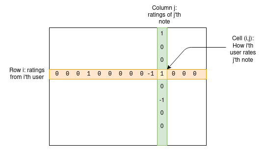
For any given note, most users have not rated that note, so most
entries in the matrix will be zero, but that's fine. The goal of the
algorithm is to create a four-column model of users and notes, assigning
each user two stats that we can call "friendliness" and "polarity", and
each note two stats that we can call "helpfulness" and "polarity". The
model is trying to predict the matrix as a function of these values,
using the following formula:

Note that here I am introducing both the terminology used in the Birdwatch
paper, and my own terms to provide a less mathematical intuition for
what the variables mean:
- μ is a "general public mood" parameter that
accounts for how high the ratings are that users give in general
- \(i_u\) is a user's
"friendliness": how likely that particular user is to
give high ratings
- \(i_n\) is a note's
"helpfulness": how likely that particular note is to
get rated highly. Ultimately, this is the variable we care
about.
- \(f_u\) or \(f_n\) is user or note's
"polarity": its position among the dominant axis of
political polarization. In practice, negative polarity roughly means
"left-leaning" and positive polarity means "right-leaning", but note
that the axis of polarization is discovered emergently from
analyzing users and notes; the concepts of leftism and rightism are in
no way hard-coded.
The algorithm uses a pretty basic machine learning model (standard gradient
descent) to find values for these variables that do the best
possible job of predicting the matrix values. The helpfulness that a
particular note is assigned is the note's final score. If a note's
helpfulness is at least +0.4, the note gets shown.
The core clever idea here is that the "polarity" terms absorb
the properties of a note that cause it to be liked by some users and not
others, and the "helpfulness" term only measures the properties that a
note has that cause it to be liked by all. Thus, selecting for
helpfulness identifies notes that get cross-tribal approval, and selects
against notes that get cheering from one tribe at the expense of disgust
from the other tribe.
I made a simplified implementation of the basic algorithm; you can
find it here,
and are welcome to play around with it.
Now, the above is only a description of the central core of the
algorithm. In reality, there are a lot of extra mechanisms
bolted on top. Fortunately, they are described in the public
documentation. These mechanisms include the following:
- The algorithm gets run many times, each time adding some randomly
generated extreme "pseudo-votes" to the votes. This means that the
algorithm's true output for each note is a range of values, and the
final result depends on a "lower confidence bound" taken from this
range, which is checked against a threshold of 0.32.
- If many users (especially users with a similar polarity to the note)
rate a note "Not Helpful", and furthermore they specify the same "tag"
(eg. "Argumentative or biased language", "Sources do not support note")
as the reason for their rating, the helpfulness threshold required for
the note to be published increases from 0.4 to 0.5 (this looks small but
it's very significant in practice)
- If a note is accepted, the threshold that its helpfulness must drop
below to de-accept it is 0.01 points lower than the threshold that a
note's helpfulness needed to reach for the note to be originally
accepted
- The algorithm gets run even more times with multiple
models, and this can sometimes promote notes whose original helpfulness
score is somewhere between 0.3 and 0.4
All in all, you get some pretty complicated python code that amounts
to 6282 lines stretching across 22 files. But it is all open, you can
download the note
and rating data and run it yourself, and see if the outputs
correspond to what is actually on Twitter at any given moment.
So how does this look in
practice?
Probably the single most important idea in this algorithm that
distinguishes it from naively taking an average score from people's
votes is what I call the "polarity" values. The algorithm documentation
calls them \(f_u\) and \(f_n\), using \(f\) for factor because these are
the two terms that get multiplied with each other; the more general
language is in part because of a desire to eventually make \(f_u\) and \(f_n\) multi-dimensional.
Polarity is assigned to both users and notes. The link between
user IDs and the underlying Twitter accounts is intentionally
kept hidden, but notes are public. In practice, the polarities generated
by the algorithm, at least for the English-language data set, map very
closely to the left vs right political spectrum.
Here are some examples of notes that have gotten polarities around
-0.8:
Note that I am not cherry-picking here; these are literally the first
three rows in the scored_notes.tsv spreadsheet generated by
the algorithm when I ran it locally that have a polarity score (called
coreNoteFactor1 in the spreadsheet) of less than -0.8.
Now, here are some notes that have gotten polarities around +0.8. It
turns out that many of these are either people talking about Brazilian
politics in Portuguese or Tesla fans angrily refuting criticism of
Tesla, so let me cherry-pick a bit to find a few that are not:
Once again, it is worth reminding ourselves that the "left vs right
divide" was not in any way hardcoded into the algorithm; it was
discovered emergently by the calculation. This suggests that if you
apply this algorithm in other cultural contexts, it could automatically
detect what their primary political divides are, and bridge across those
too.
Meanwhile, notes that get the highest helpfulness look like
this. This time, because these notes are actually shown on Twitter, I
can just screenshot one directly:

And another one:

The second one touches on highly partisan political themes more
directly, but it's a clear, high-quality and informative note, and so it
gets rated highly. So all in all, the algorithm seems to work, and the
ability to verify the outputs of the algorithm by running the code seems
to work.
What do I think of the
algorithm?
The main thing that struck me when analyzing the algorithm is just
how complex it is. There is the "academic paper version", a
gradient descent which finds a best fit to a five-term vector and matrix
equation, and then the real version, a complicated series of many
different executions of the algorithm with lots of arbitrary
coefficients along the way.
Even the academic paper version hides complexity under the hood. The
equation that it's optimizing is a degree-4
equation (as there's a degree-2 \(f_u *
f_n\) term in the prediction formula, and compounding that the
cost function measures error
squared). While optimizing a degree-2 equation over any number of
variables almost always has a unique solution, which you can calculate
with fairly basic linear algebra, a degree-4 equation over many
variables often has many solutions, and so multiple rounds of a gradient
descent algorithm may well arrive at different answers. Tiny changes to
the input may well cause the descent to flip from one local minimum to
another, significantly changing the output.
The distinction between this, and algorithms that I helped work on
such as quadratic
funding, feels to me like a distinction between an
economist's algorithm and an engineer's
algorithm. An economist's algorithm, at its best, values being
simple, being reasonably easy to analyze, and having clear mathematical
properties that show why it's optimal (or least-bad) for the task that
it's trying to solve, and ideally proves bounds on how much damage
someone can do by trying to exploit it. An engineer's algorithm, on the
other hand, is a result of iterative trial and error, seeing what works
and what doesn't in the engineer's operational context. Engineer's
algorithms are pragmatic and do the job; economist's algorithms
don't go totally crazy when confronted with the unexpected.
Or, as was famously
said on a related topic by the esteemed internet philosopher roon
(aka tszzl):
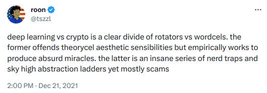
Of course, I would say that the "theorycel aesthetic" side of crypto
is necessary precisely to distinguish protocols that are actually trustless from janky
constructions that look fine and seem to work well but under the hood
require trusting a few centralized actors - or worse, actually end up
being outright scams.
Deep learning works when it works, but it has inevitable
vulnerabilities to all kinds of adversarial
machine learning attacks. Nerd traps and sky-high abstraction
ladders, if done well, can be quite robust against them. And so one
question I have is: could we turn Community Notes itself into
something that's more like an economist algorithm?
To give a view of what this would mean in practice, let's explore an
algorithm I came up with a few years ago for a similar purpose: pairwise-bounded
quadratic funding.
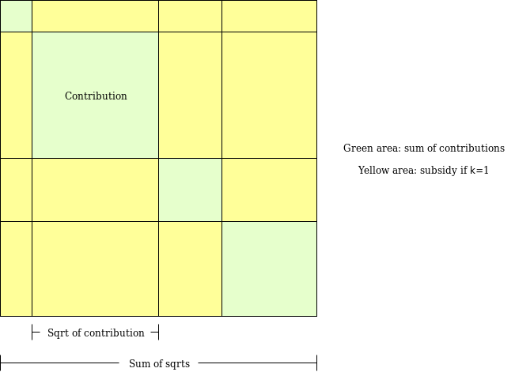
The goal of pairwise-bounded quadratic funding is to plug a hole in
"regular" quadratic funding, where if even two participants collude with
each other, they can each contribute a very high amount of money to a
fake project that sends the money back to them, and get a large subsidy
that drains the entire pool. In pairwise quadratic funding, we assign
each pair of participants a limited budget \(M\). The algorithm walks over all possible
pairs of participants, and if the algorithm decides to add a subsidy to
some project \(P\) because both
participant \(A\) and participant \(B\) supported it, that subsidy comes out of
the budget assigned to the pair \((A,
B)\). Hence, even if \(k\)
participants were to collude, the amount they could steal from the
mechanism is at most \(k * (k-1) *
M\).
An algorithm of exactly this form is not very applicable to
the Community Notes context, because each user makes very few votes: on
average, any two users would have exactly zero votes in common, and so
the algorithm would learn nothing about users' polarities by just
looking at each pair of users separately. The goal of the machine
learning model is precisely to try to "fill in" the matrix from very
sparse source data that cannot be analyzed in this way directly. But the
challenge of this approach is that it takes extra effort to do it in a
way that does not make the result highly volatile in the face of a few
bad votes.
One thing that we could do is analyze whether or not the Community
Notes algorithm, as is, actually manages to fight polarization at
all - that is, whether or not it actually does any better than a
naive voting algorithm. Naive voting algorithms already fight
polarization to some limited extent: a post with 200 upvotes and 100
downvotes does worse than a post that just gets the 200 upvotes. But
does Community Notes do better than that?
Looking at the algorithm abstractly, it's hard to tell. Why wouldn't
a high-average-rating but polarizing post get a strong polarity
and a high helpfulness? The idea is that polarity is supposed
to "absorb" the properties of a note that cause it to get a lot of votes
if those votes are conflicting, but does it actually do that?
To check this, I ran my
own simplified implementation for 100 rounds. The average results
were:
Quality averages:
Group 1 (good): 0.30032841807271166
Group 2 (good but extra polarizing): 0.21698871680927437
Group 3 (neutral): 0.09443120045416832
Group 4 (bad): -0.1521160965793673
In this test, "Good" notes received a rating of +2 from users in the
same political tribe and +0 from users in the opposite political tribe,
and "Good but extra polarizing" notes received a rating of +4 from
same-tribe users and -2 from opposite-tribe users. Same average, but
different polarity. And it seems to actually be the case that "Good"
notes get a higher average helpfulness than "Good but extra polarizing"
notes.
One other benefit of having something closer to an "economist's
algorithm" would be having a clearer story for how the algorithm is
penalizing polarization.
How useful is
this all in high-stakes situations?
We can see some of how this works out by looking at one specific
situation. About a month ago, Ian Bremmer complained that a highly
critical Community Note that was added to a tweet by a Chinese
government official had
been removed.

The note, which is now no longer visible. Screenshot by Ian Bremmer.
This is heavy stuff. It's one thing to do mechanism design in a nice
sandbox Ethereum community environment where the largest complaint is
$20,000 going to a polarizing
Twitter influencer. It's another to do it for political and
geopolitical questions that affect many millions of people and where
everyone, often quite understandably, is assuming maximum bad faith. But
if mechanism designers want to have a significant impact into the world,
engaging with these high-stakes environments is ultimately
necessary.
In the case of Twitter, there is a clear reason why one might suspect
centralized manipulation to be behind the Note's removal: Elon has a lot
of business
interests in China, and so there is a possibility that Elon forced
the Community Notes team to interfere with the algorithm's outputs and
delete this specific one.
Fortunately, the algorithm is open source and verifiable, so we can
actually look under the hood! Let's do that. The URL of the original
tweet is https://twitter.com/MFA_China/status/1676157337109946369.
The number at the end, 1676157337109946369, is the tweet
ID. We can search for that in the downloadable
data, and identify the specific row in the spreadsheet that has the
above note:
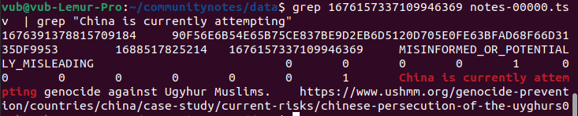
Here we get the ID of the note itself,
1676391378815709184. We then search for that in
the scored_notes.tsv and
note_status_history.tsv files generated by running the
algorithm. We get:
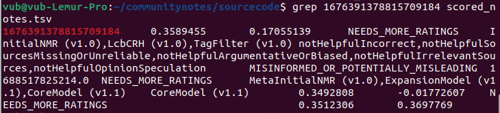
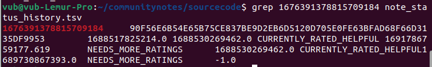
The second column in the first output is the note's current rating.
The second output shows the note's history: its current status is in the
seventh column (NEEDS_MORE_RATINGS), and the first status
that's not NEEDS_MORE_RATINGS that it received earlier on
is in the fifth column (CURRENTLY_RATED_HELPFUL). Hence, we
see that the algorithm itself first showed the note, and then
removed it once its rating dropped somewhat - seemingly no centralized
intervention involved.
We can see this another way by looking at the votes themselves. We
can scan the ratings-00000.tsv file to isolate all the
ratings for this note, and see how many rated HELPFUL vs
NOT_HELPFUL:

But if you sort them by timestamp, and look at the first 50 votes,
you see 40 HELPFUL votes and 9 NOT_HELPFUL
votes. And so we see the same conclusion: the note's initial audience
viewed the note more favorably then the note's later audience, and so
its rating started out higher and dropped lower over time.
Unfortunately, the exact story of how the note changed
status is complicated to explain: it's not a simple matter of "before
the rating was above 0.40, now it's below 0.40, so it got dropped".
Rather, the high volume of NOT_HELPFUL replies triggered
one of the outlier
conditions, increasing the helpfulness score that the note needs to
stay over the threshold.
This is a good learning opportunity for another lesson: making a
credibly neutral algorithm truly credible requires keeping it simple.
If a note moves from being accepted to not being accepted, there should
be a simple and legible story as to why.
Of course, there is a totally different way in which this
vote could have been manipulated: brigading. Someone who sees a
note that they disapprove of could call upon a highly engaged community
(or worse, a mass of fake accounts) to rate it NOT_HELPFUL,
and it may not require that many votes to drop the note from being seen
as "helpful" to being seen as "polarized". Properly minimizing the
vulnerability of this algorithm to such coordinated attacks will require
a lot more analysis and work. One possible improvement would be not
allowing any user to vote on any note, but instead using the "For you"
algorithmic feed to randomly allocate notes to raters, and only allow
raters to rate those notes that they have been allocated to.
The main criticism of Community Notes that I have seen is basically
that it does not do enough. Two
recent articles
that I have seen make this point. Quoting one:
The program is severely hampered by the fact that for a Community
Note to be public, it has to be generally accepted by a consensus of
people from all across the political spectrum.
"It has to have ideological consensus," he said. "That means people
on the left and people on the right have to agree that that note must be
appended to that tweet."
Essentially, it requires a "cross-ideological agreement on truth, and
in an increasingly partisan environment, achieving that consensus is
almost impossible, he said.
This is a difficult issue, but ultimately I come down on the side
that it is better to let ten misinformative tweets go free than it is to
have one tweet covered by a note that judges it unfairly. We have seen
years of fact-checking that is brave, and does come
from the perspective of "well, actually we know the truth, and we know
that one side lies much more often than the other". And what happened as
a result?
Honestly, some pretty widespread distrust of fact-checking as a
concept. One strategy here is to say: ignore the haters, remember that
the fact checking experts really do know the facts better than any
voting system, and stay the course. But going all-in on this approach seems
risky. There is value in building cross-tribal institutions that are
at least somewhat respected by everyone. As with William
Blackstone's dictum and the courts, it feels to me that maintaining
such respect requires a system that commits far more sins of omission than
it does sins of commission. And so it seems valuable to me that there is
at least one major organization that is taking this alternate path, and
treating its rare cross-tribal respect as a resource to be cherished and
built upon.
Another reason why I think it is okay for Community Notes to be
conservative is that I do not think it is the goal for every
misinformative tweet, or even most misinformative tweets, to receive a
corrective note. Even if less than one percent of misinformative
tweets get a note providing context or correcting them, Community Notes
is still providing an exceedingly valuable service as an educational
tool. The goal is not to correct everything; rather, the goal
is to remind people that multiple perspectives exist, that certain kinds
of posts that look convincing and engaging in isolation are actually
quite incorrect, and you, yes you, can often go do a basic internet
search to verify that it's incorrect.
Community Notes cannot be, and is not meant to be, a miracle cure
that solves all problems in public epistemology. Whatever problems it
does not solve, there is plenty of room for other mechanisms, whether
newfangled gadgets such as prediction markets or good old-fashioned
organizations hiring full-time staff with domain expertise, to try to
fill in the gaps.
Conclusions
Community Notes, in addition to being a fascinating social media
experiment, is also an instance of a fascinating new and emerging genre
of mechanism design: mechanisms that intentionally try to identify
polarization, and favor things that bridge across divides rather than
perpetuate them.
The two other things in this category that I know about are (i) pairwise
quadratic funding, which is being used in Gitcoin Grants and (ii) Polis, a discussion tool that uses clustering
algorithms to help communities identify statements that are commonly
well-received across people who normally have different viewpoints. This
area of mechanism design is valuable, and I hope that we can see a lot
more academic work in this field.
Algorithmic transparency of the type that Community Notes offers is
not quite full-on decentralized social media - if you disagree with how
Community Notes works, there's no way to go see a view of the same
content with a different algorithm. But it's the closest that
very-large-scale applications are going to get within the next couple of
years, and we can see that it provides a lot of value already, both by
preventing centralized manipulation and by ensuring that platforms that
do not engage in such manipulation can get proper credit for doing
so.
I look forward to seeing both Community Notes, and hopefully many
more algorithms of a similar spirit, develop and grow over the next
decade.
What do I think about Community Notes?
2023 Aug 16 See all postsSpecial thanks to Dennis Pourteaux and Jay Baxter for feedback and review.
The last two years of
TwitterX have been tumultuous, to say the least. After the platform wasboughtnot boughtbought by Elon Musk for $44 billion last year, Elon enacted sweeping changes to the company's staffing, content moderation and business model, not to mention changes to the culture on the site that may well have been a result of Elon's soft power more than any specific policy decision. But in the middle of these highly contentious actions, one new feature on Twitter grew rapidly in importance, and seems to be beloved by people across the political spectrum: Community Notes.Community Notes is a fact-checking tool that sometimes attaches context notes, like the one on Elon's tweet above, to tweets as a fact-checking and anti-misinformation tool. It was originally called Birdwatch, and was first rolled out as a pilot project in January 2021. Since then, it has expanded in stages, with the most rapid phase of its expansion coinciding with Twitter's takeover by Elon last year. Today, Community Notes appear frequently on tweets that get a very large audience on Twitter, including those on contentious political topics. And both in my view, and in the view of many people across the political spectrum I talk to, the notes, when they appear, are informative and valuable.
But what interests me most about Community Notes is how, despite not being a "crypto project", it might be the closest thing to an instantiation of "crypto values" that we have seen in the mainstream world. Community Notes are not written or curated by some centrally selected set of experts; rather, they can be written and voted on by anyone, and which notes are shown or not shown is decided entirely by an open source algorithm. The Twitter site has a detailed and extensive guide describing how the algorithm works, and you can download the data containing which notes and votes have been published, run the algorithm locally, and verify that the output matches what is visible on the Twitter site. It's not perfect, but it's surprisingly close to satisfying the ideal of credible neutrality, all while being impressively useful, even under contentious conditions, at the same time.
How does the Community Notes algorithm work?
Anyone with a Twitter account matching some criteria (basically: active for 6+ months, no recent rule violations, verified phone number) can sign up to participate in Community Notes. Currently, participants are slowly and randomly being accepted, but eventually the plan is to let in anyone who fits the criteria. Once you are accepted, you can at first participate in rating existing notes, and once you've made enough good ratings (measured by seeing which ratings match with the final outcome for that note), you can also write notes of your own.
When you write a note, the note gets a score based on the reviews that it receives from other Community Notes members. These reviews can be thought of as being votes along a 3-point scale of
HELPFUL,SOMEWHAT_HELPFULandNOT_HELPFUL, but a review can also contain some other tags that have roles in the algorithm. Based on these reviews, a note gets a score. If the note's score is above 0.40, the note is shown; otherwise, the note is not shown.The way that the score is calculated is what makes the algorithm unique. Unlike simpler algorithms, which aim to simply calculate some kind of sum or average over users' ratings and use that as the final result, the Community Notes rating algorithm explicitly attempts to prioritize notes that receive positive ratings from people across a diverse range of perspectives. That is, if people who usually disagree on how they rate notes end up agreeing on a particular note, that note is scored especially highly.
Let us get into the deep math of how this works. We have a set of users and a set of notes; we can create a matrix \(M\), where the cell \(M_{i,j}\) represents how the i'th user rated the j'th note.
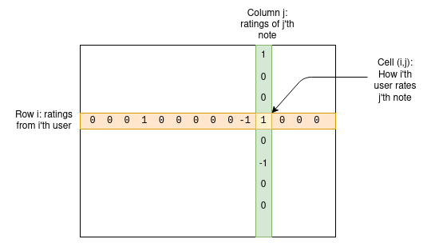
For any given note, most users have not rated that note, so most entries in the matrix will be zero, but that's fine. The goal of the algorithm is to create a four-column model of users and notes, assigning each user two stats that we can call "friendliness" and "polarity", and each note two stats that we can call "helpfulness" and "polarity". The model is trying to predict the matrix as a function of these values, using the following formula:
Note that here I am introducing both the terminology used in the Birdwatch paper, and my own terms to provide a less mathematical intuition for what the variables mean:
The algorithm uses a pretty basic machine learning model (standard gradient descent) to find values for these variables that do the best possible job of predicting the matrix values. The helpfulness that a particular note is assigned is the note's final score. If a note's helpfulness is at least +0.4, the note gets shown.
The core clever idea here is that the "polarity" terms absorb the properties of a note that cause it to be liked by some users and not others, and the "helpfulness" term only measures the properties that a note has that cause it to be liked by all. Thus, selecting for helpfulness identifies notes that get cross-tribal approval, and selects against notes that get cheering from one tribe at the expense of disgust from the other tribe.
I made a simplified implementation of the basic algorithm; you can find it here, and are welcome to play around with it.
Now, the above is only a description of the central core of the algorithm. In reality, there are a lot of extra mechanisms bolted on top. Fortunately, they are described in the public documentation. These mechanisms include the following:
All in all, you get some pretty complicated python code that amounts to 6282 lines stretching across 22 files. But it is all open, you can download the note and rating data and run it yourself, and see if the outputs correspond to what is actually on Twitter at any given moment.
So how does this look in practice?
Probably the single most important idea in this algorithm that distinguishes it from naively taking an average score from people's votes is what I call the "polarity" values. The algorithm documentation calls them \(f_u\) and \(f_n\), using \(f\) for factor because these are the two terms that get multiplied with each other; the more general language is in part because of a desire to eventually make \(f_u\) and \(f_n\) multi-dimensional.
Polarity is assigned to both users and notes. The link between user IDs and the underlying Twitter accounts is intentionally kept hidden, but notes are public. In practice, the polarities generated by the algorithm, at least for the English-language data set, map very closely to the left vs right political spectrum.
Here are some examples of notes that have gotten polarities around -0.8:
Note that I am not cherry-picking here; these are literally the first three rows in the
scored_notes.tsvspreadsheet generated by the algorithm when I ran it locally that have a polarity score (calledcoreNoteFactor1in the spreadsheet) of less than -0.8.Now, here are some notes that have gotten polarities around +0.8. It turns out that many of these are either people talking about Brazilian politics in Portuguese or Tesla fans angrily refuting criticism of Tesla, so let me cherry-pick a bit to find a few that are not:
Once again, it is worth reminding ourselves that the "left vs right divide" was not in any way hardcoded into the algorithm; it was discovered emergently by the calculation. This suggests that if you apply this algorithm in other cultural contexts, it could automatically detect what their primary political divides are, and bridge across those too.
Meanwhile, notes that get the highest helpfulness look like this. This time, because these notes are actually shown on Twitter, I can just screenshot one directly:
And another one:
The second one touches on highly partisan political themes more directly, but it's a clear, high-quality and informative note, and so it gets rated highly. So all in all, the algorithm seems to work, and the ability to verify the outputs of the algorithm by running the code seems to work.
What do I think of the algorithm?
The main thing that struck me when analyzing the algorithm is just how complex it is. There is the "academic paper version", a gradient descent which finds a best fit to a five-term vector and matrix equation, and then the real version, a complicated series of many different executions of the algorithm with lots of arbitrary coefficients along the way.
Even the academic paper version hides complexity under the hood. The equation that it's optimizing is a degree-4 equation (as there's a degree-2 \(f_u * f_n\) term in the prediction formula, and compounding that the cost function measures error squared). While optimizing a degree-2 equation over any number of variables almost always has a unique solution, which you can calculate with fairly basic linear algebra, a degree-4 equation over many variables often has many solutions, and so multiple rounds of a gradient descent algorithm may well arrive at different answers. Tiny changes to the input may well cause the descent to flip from one local minimum to another, significantly changing the output.
The distinction between this, and algorithms that I helped work on such as quadratic funding, feels to me like a distinction between an economist's algorithm and an engineer's algorithm. An economist's algorithm, at its best, values being simple, being reasonably easy to analyze, and having clear mathematical properties that show why it's optimal (or least-bad) for the task that it's trying to solve, and ideally proves bounds on how much damage someone can do by trying to exploit it. An engineer's algorithm, on the other hand, is a result of iterative trial and error, seeing what works and what doesn't in the engineer's operational context. Engineer's algorithms are pragmatic and do the job; economist's algorithms don't go totally crazy when confronted with the unexpected.
Or, as was famously said on a related topic by the esteemed internet philosopher roon (aka tszzl):
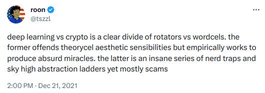
Of course, I would say that the "theorycel aesthetic" side of crypto is necessary precisely to distinguish protocols that are actually trustless from janky constructions that look fine and seem to work well but under the hood require trusting a few centralized actors - or worse, actually end up being outright scams.
Deep learning works when it works, but it has inevitable vulnerabilities to all kinds of adversarial machine learning attacks. Nerd traps and sky-high abstraction ladders, if done well, can be quite robust against them. And so one question I have is: could we turn Community Notes itself into something that's more like an economist algorithm?
To give a view of what this would mean in practice, let's explore an algorithm I came up with a few years ago for a similar purpose: pairwise-bounded quadratic funding.
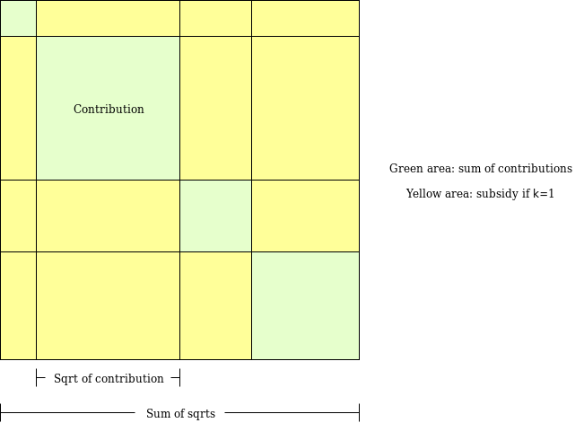
The goal of pairwise-bounded quadratic funding is to plug a hole in "regular" quadratic funding, where if even two participants collude with each other, they can each contribute a very high amount of money to a fake project that sends the money back to them, and get a large subsidy that drains the entire pool. In pairwise quadratic funding, we assign each pair of participants a limited budget \(M\). The algorithm walks over all possible pairs of participants, and if the algorithm decides to add a subsidy to some project \(P\) because both participant \(A\) and participant \(B\) supported it, that subsidy comes out of the budget assigned to the pair \((A, B)\). Hence, even if \(k\) participants were to collude, the amount they could steal from the mechanism is at most \(k * (k-1) * M\).
An algorithm of exactly this form is not very applicable to the Community Notes context, because each user makes very few votes: on average, any two users would have exactly zero votes in common, and so the algorithm would learn nothing about users' polarities by just looking at each pair of users separately. The goal of the machine learning model is precisely to try to "fill in" the matrix from very sparse source data that cannot be analyzed in this way directly. But the challenge of this approach is that it takes extra effort to do it in a way that does not make the result highly volatile in the face of a few bad votes.
Does Community Notes actually fight polarization?
One thing that we could do is analyze whether or not the Community Notes algorithm, as is, actually manages to fight polarization at all - that is, whether or not it actually does any better than a naive voting algorithm. Naive voting algorithms already fight polarization to some limited extent: a post with 200 upvotes and 100 downvotes does worse than a post that just gets the 200 upvotes. But does Community Notes do better than that?
Looking at the algorithm abstractly, it's hard to tell. Why wouldn't a high-average-rating but polarizing post get a strong polarity and a high helpfulness? The idea is that polarity is supposed to "absorb" the properties of a note that cause it to get a lot of votes if those votes are conflicting, but does it actually do that?
To check this, I ran my own simplified implementation for 100 rounds. The average results were:
In this test, "Good" notes received a rating of +2 from users in the same political tribe and +0 from users in the opposite political tribe, and "Good but extra polarizing" notes received a rating of +4 from same-tribe users and -2 from opposite-tribe users. Same average, but different polarity. And it seems to actually be the case that "Good" notes get a higher average helpfulness than "Good but extra polarizing" notes.
One other benefit of having something closer to an "economist's algorithm" would be having a clearer story for how the algorithm is penalizing polarization.
How useful is this all in high-stakes situations?
We can see some of how this works out by looking at one specific situation. About a month ago, Ian Bremmer complained that a highly critical Community Note that was added to a tweet by a Chinese government official had been removed.
The note, which is now no longer visible. Screenshot by Ian Bremmer.
This is heavy stuff. It's one thing to do mechanism design in a nice sandbox Ethereum community environment where the largest complaint is $20,000 going to a polarizing Twitter influencer. It's another to do it for political and geopolitical questions that affect many millions of people and where everyone, often quite understandably, is assuming maximum bad faith. But if mechanism designers want to have a significant impact into the world, engaging with these high-stakes environments is ultimately necessary.
In the case of Twitter, there is a clear reason why one might suspect centralized manipulation to be behind the Note's removal: Elon has a lot of business interests in China, and so there is a possibility that Elon forced the Community Notes team to interfere with the algorithm's outputs and delete this specific one.
Fortunately, the algorithm is open source and verifiable, so we can actually look under the hood! Let's do that. The URL of the original tweet is
https://twitter.com/MFA_China/status/1676157337109946369. The number at the end,1676157337109946369, is the tweet ID. We can search for that in the downloadable data, and identify the specific row in the spreadsheet that has the above note: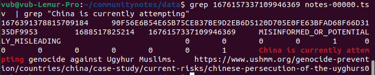
Here we get the ID of the note itself,
1676391378815709184. We then search for that in thescored_notes.tsvandnote_status_history.tsvfiles generated by running the algorithm. We get: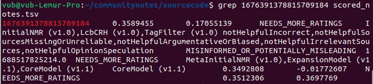
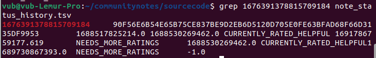
The second column in the first output is the note's current rating. The second output shows the note's history: its current status is in the seventh column (
NEEDS_MORE_RATINGS), and the first status that's notNEEDS_MORE_RATINGSthat it received earlier on is in the fifth column (CURRENTLY_RATED_HELPFUL). Hence, we see that the algorithm itself first showed the note, and then removed it once its rating dropped somewhat - seemingly no centralized intervention involved.We can see this another way by looking at the votes themselves. We can scan the
ratings-00000.tsvfile to isolate all the ratings for this note, and see how many ratedHELPFULvsNOT_HELPFUL:But if you sort them by timestamp, and look at the first 50 votes, you see 40
HELPFULvotes and 9NOT_HELPFULvotes. And so we see the same conclusion: the note's initial audience viewed the note more favorably then the note's later audience, and so its rating started out higher and dropped lower over time.Unfortunately, the exact story of how the note changed status is complicated to explain: it's not a simple matter of "before the rating was above 0.40, now it's below 0.40, so it got dropped". Rather, the high volume of
NOT_HELPFULreplies triggered one of the outlier conditions, increasing the helpfulness score that the note needs to stay over the threshold.This is a good learning opportunity for another lesson: making a credibly neutral algorithm truly credible requires keeping it simple. If a note moves from being accepted to not being accepted, there should be a simple and legible story as to why.
Of course, there is a totally different way in which this vote could have been manipulated: brigading. Someone who sees a note that they disapprove of could call upon a highly engaged community (or worse, a mass of fake accounts) to rate it
NOT_HELPFUL, and it may not require that many votes to drop the note from being seen as "helpful" to being seen as "polarized". Properly minimizing the vulnerability of this algorithm to such coordinated attacks will require a lot more analysis and work. One possible improvement would be not allowing any user to vote on any note, but instead using the "For you" algorithmic feed to randomly allocate notes to raters, and only allow raters to rate those notes that they have been allocated to.Is Community Notes not "brave" enough?
The main criticism of Community Notes that I have seen is basically that it does not do enough. Two recent articles that I have seen make this point. Quoting one:
This is a difficult issue, but ultimately I come down on the side that it is better to let ten misinformative tweets go free than it is to have one tweet covered by a note that judges it unfairly. We have seen years of fact-checking that is brave, and does come from the perspective of "well, actually we know the truth, and we know that one side lies much more often than the other". And what happened as a result?
Honestly, some pretty widespread distrust of fact-checking as a concept. One strategy here is to say: ignore the haters, remember that the fact checking experts really do know the facts better than any voting system, and stay the course. But going all-in on this approach seems risky. There is value in building cross-tribal institutions that are at least somewhat respected by everyone. As with William Blackstone's dictum and the courts, it feels to me that maintaining such respect requires a system that commits far more sins of omission than it does sins of commission. And so it seems valuable to me that there is at least one major organization that is taking this alternate path, and treating its rare cross-tribal respect as a resource to be cherished and built upon.
Another reason why I think it is okay for Community Notes to be conservative is that I do not think it is the goal for every misinformative tweet, or even most misinformative tweets, to receive a corrective note. Even if less than one percent of misinformative tweets get a note providing context or correcting them, Community Notes is still providing an exceedingly valuable service as an educational tool. The goal is not to correct everything; rather, the goal is to remind people that multiple perspectives exist, that certain kinds of posts that look convincing and engaging in isolation are actually quite incorrect, and you, yes you, can often go do a basic internet search to verify that it's incorrect.
Community Notes cannot be, and is not meant to be, a miracle cure that solves all problems in public epistemology. Whatever problems it does not solve, there is plenty of room for other mechanisms, whether newfangled gadgets such as prediction markets or good old-fashioned organizations hiring full-time staff with domain expertise, to try to fill in the gaps.
Conclusions
Community Notes, in addition to being a fascinating social media experiment, is also an instance of a fascinating new and emerging genre of mechanism design: mechanisms that intentionally try to identify polarization, and favor things that bridge across divides rather than perpetuate them.
The two other things in this category that I know about are (i) pairwise quadratic funding, which is being used in Gitcoin Grants and (ii) Polis, a discussion tool that uses clustering algorithms to help communities identify statements that are commonly well-received across people who normally have different viewpoints. This area of mechanism design is valuable, and I hope that we can see a lot more academic work in this field.
Algorithmic transparency of the type that Community Notes offers is not quite full-on decentralized social media - if you disagree with how Community Notes works, there's no way to go see a view of the same content with a different algorithm. But it's the closest that very-large-scale applications are going to get within the next couple of years, and we can see that it provides a lot of value already, both by preventing centralized manipulation and by ensuring that platforms that do not engage in such manipulation can get proper credit for doing so.
I look forward to seeing both Community Notes, and hopefully many more algorithms of a similar spirit, develop and grow over the next decade.